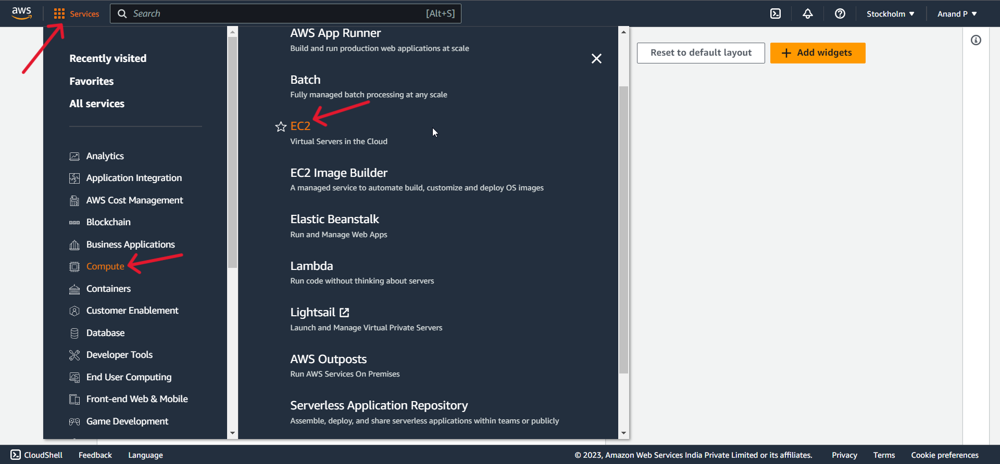
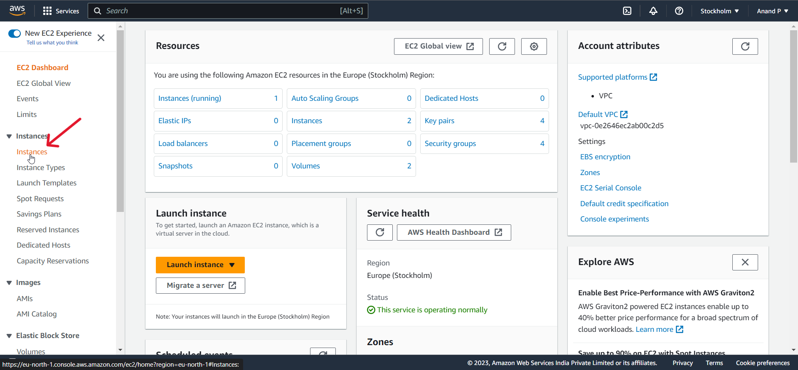
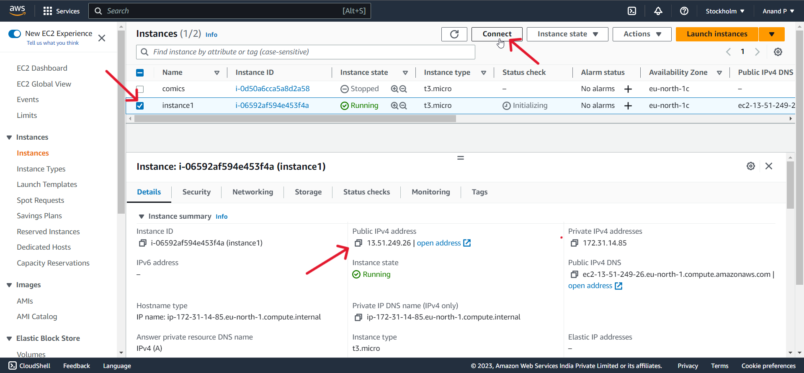
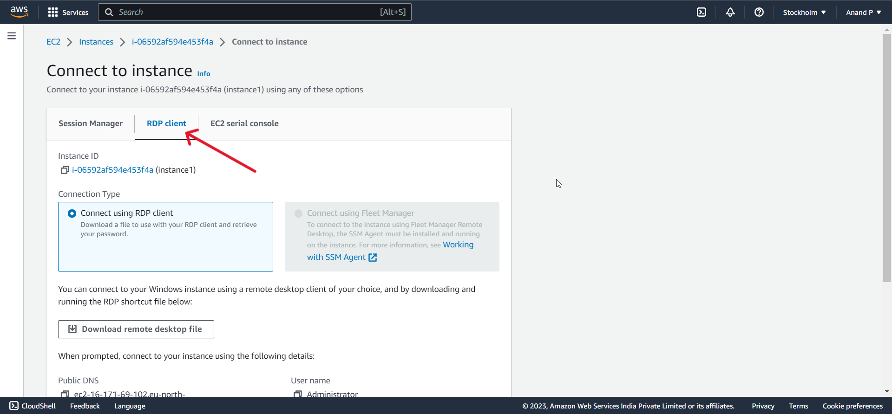
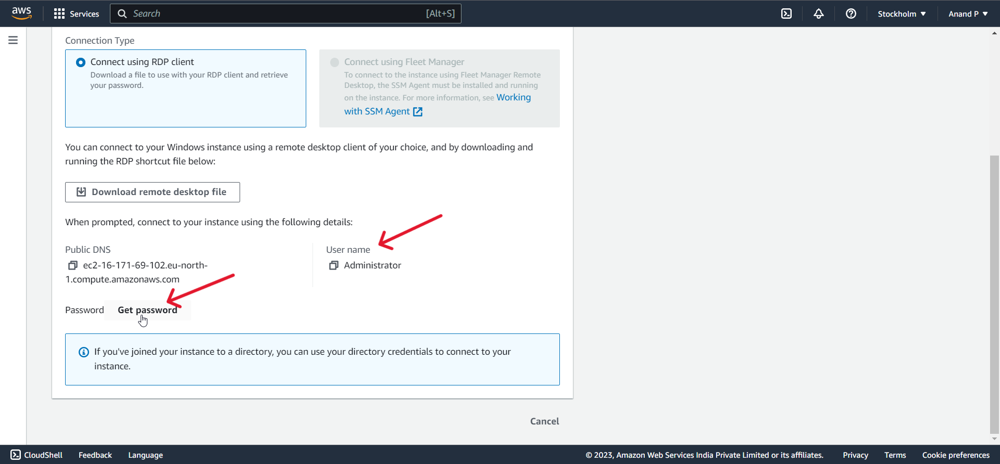
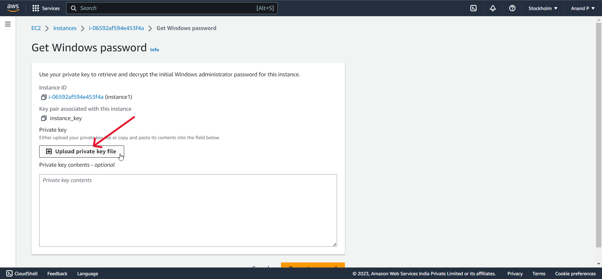
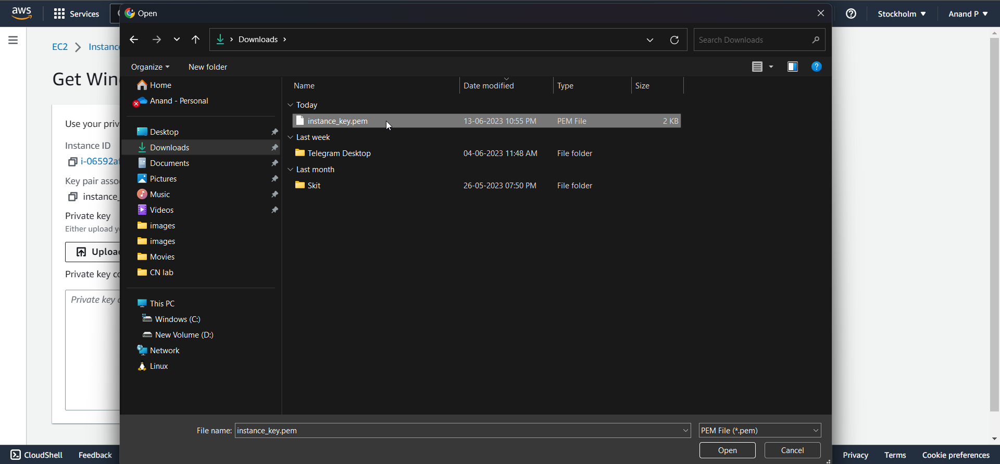
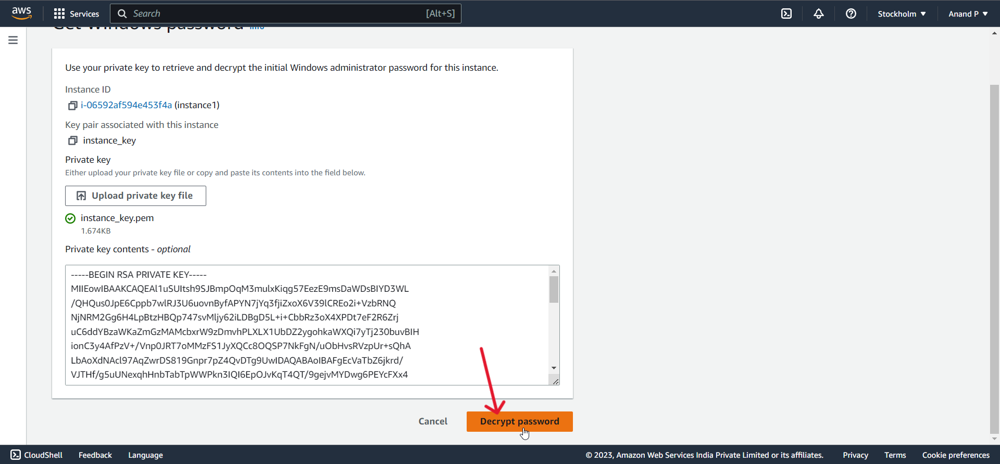
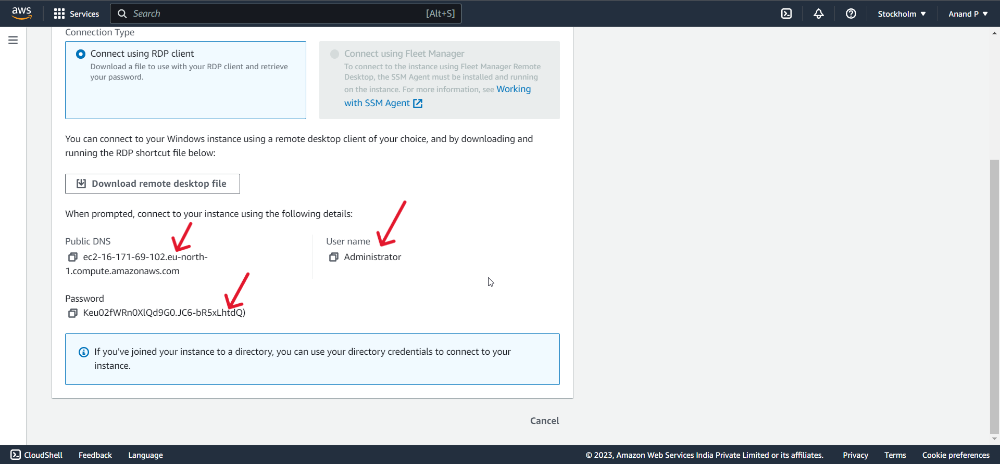

1 . Login to your aws account and click the Services in the top left corner , then click Compute and then EC2
2 . Click instances
3 . Here you can see all the instances that you have created. Check the box near to the instance that you want to connect.You can also see the public IPv4 address. Now click the connect button
4 . select RDP client
5 . Scroll down and you can see your default username here. click Get password
6 . Click Upload private key file
7 . Upload your instance key pair with pem extension that you have downloaded while creating the instance
8 . Click the Decrypt password to see your password
9 . Finally now you can see the Public DNS , username and password in this page. You can use either the public DNS or your IP address only in the IP field to connect to the remote desktop
Thank you